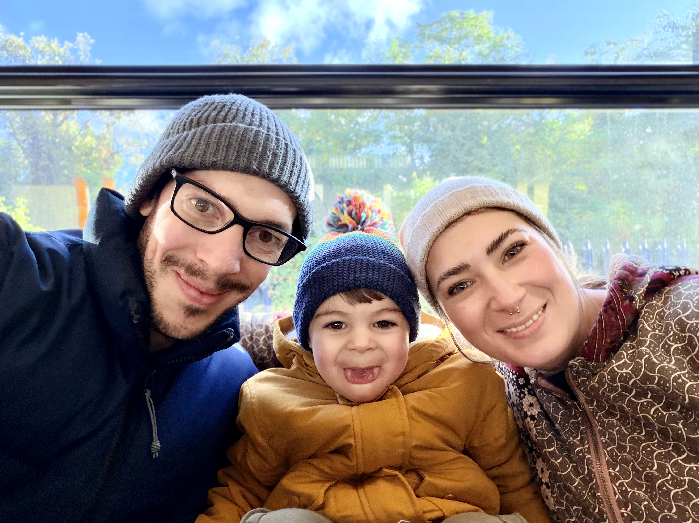

About Me
I’m Alex, originally from Brittany, France, now living in London for over 10 years. Photography is my way of capturing the world around me. The light, the mood, and the fleeting moments we often overlook. I’ve recently started this journey and invite you to explore it with me. The life in London bring me the love of my life and an exceptional son. All of this have rooted me here, but my lens always searches for new stories to tell.